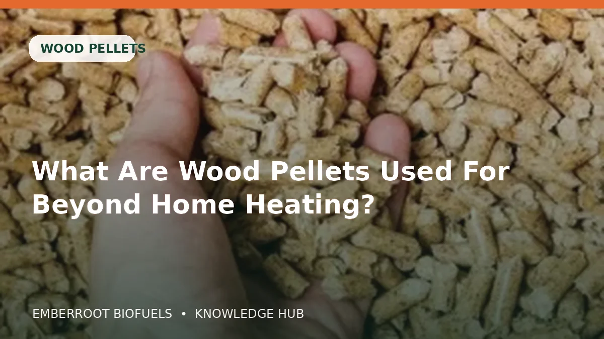

Der Pelletkauf wird einfacher, wenn Qualität, Gerätekompatibilität, Verpackung und Lieferung getrennt geprüft werden. Ein niedriger Preis hilft nicht, wenn Feinanteil, Feuchte oder Spezifikation Probleme verursachen.
Dieser Artikel dient der Information. Beachten Sie die Geräteanleitung, örtliche Vorschriften und die genaue Produktspezifikation vor Bestellung oder Nutzung.
Worauf es wirklich ankommt
Der Pelletkauf wird einfacher, wenn Qualität, Gerätekompatibilität, Verpackung und Lieferung getrennt geprüft werden. Ein niedriger Preis hilft nicht, wenn Feinanteil, Feuchte oder Spezifikation Probleme verursachen.
Mechanische Festigkeit
Feste Pellets erzeugen beim Transport weniger Feinanteil und werden gleichmäßiger durch Förderschnecken transportiert.
Diese Information schriftlich anfordern und mit Etiketten sowie Zustand der Lieferung vergleichen. Derselbe Produktname kann unterschiedliche Qualitäten und Verpackungen abdecken.
Zertifizierung und Identität
Qualitätsklasse, Hersteller oder Händler, Zertifikatsnummer und Übereinstimmung der Unterlagen mit der Charge prüfen.
Diese Information schriftlich anfordern und mit Etiketten sowie Zustand der Lieferung vergleichen. Derselbe Produktname kann unterschiedliche Qualitäten und Verpackungen abdecken.
Verpackung
Säcke, Paletten, Big Bags und lose Lieferung schützen unterschiedlich und verändern Entladung und Lagerung.
Diese Information schriftlich anfordern und mit Etiketten sowie Zustand der Lieferung vergleichen. Derselbe Produktname kann unterschiedliche Qualitäten und Verpackungen abdecken.
Lagerbedingungen
Biomasse trocken, vom feuchten Boden angehoben und vor Regen, Kondenswasser und hoher Luftfeuchte geschützt lagern.
Diese Information schriftlich anfordern und mit Etiketten sowie Zustand der Lieferung vergleichen. Derselbe Produktname kann unterschiedliche Qualitäten und Verpackungen abdecken.
Praktischer Vergleich
| Prüfpunkt | Warum wichtig |
|---|---|
| Mechanische Festigkeit | Feste Pellets erzeugen beim Transport weniger Feinanteil und werden gleichmäßiger durch Förderschnecken transportiert. |
| Zertifizierung und Identität | Qualitätsklasse, Hersteller oder Händler, Zertifikatsnummer und Übereinstimmung der Unterlagen mit der Charge prüfen. |
| Verpackung | Säcke, Paletten, Big Bags und lose Lieferung schützen unterschiedlich und verändern Entladung und Lagerung. |
| Lagerbedingungen | Biomasse trocken, vom feuchten Boden angehoben und vor Regen, Kondenswasser und hoher Luftfeuchte geschützt lagern. |
| Gerätekompatibilität | Die Geräteanleitung hat Vorrang. Abmessungen, Aschegrenzen und zugelassene Klassen müssen passen. |
Praktisches Vorgehen Schritt für Schritt
- 1
Verwendungszweck und Gerät oder Prozess festlegen
- 2
Benötigte Klasse, Maße und Feuchtegrenze notieren
- 3
Sack, Palette, Big Bag oder lose Lieferung wählen
- 4
Nettotonnage, Zufahrt und Entladung bestätigen
- 5
Schriftliches Angebot und Nachweise anfordern
- 6
Zahlungsdaten über einen vertrauenswürdigen Kanal verifizieren
- 7
Lieferung vor Einlagerung prüfen und dokumentieren
Häufige Fehler vermeiden
- Nur nach Titel oder Foto ohne Spezifikation kaufen
- Lagerplatz und Zufahrt zur Entladung ignorieren
- Preise ohne Nettogewicht und Lieferbasis vergleichen
- Nicht freigegebenen Brennstoff im Gerät verwenden
- An nicht unabhängig geprüfte Bank- oder Wallet-Daten zahlen
Checkliste für Käufer
- Produkt und Klasse sind genau benannt
- Feuchte, Maße und relevante Qualitätswerte stehen schriftlich fest
- Verpackungseinheit und Nettomenge sind klar
- Herkunft sowie Hersteller oder Händler sind genannt
- Lieferbedingungen, Entladung und Frist sind vereinbart
- Zahlungsempfänger und Auftragsreferenz sind verifiziert
- Aussagen und Zertifikatsnummern sind unabhängig prüfbar
Häufig gestellte Fragen
Ist die billigste Option normalerweise die beste?
Nicht unbedingt. Vergleichen Sie gelieferte Spezifikation, Nettomenge, Lagerverluste, Gerätekompatibilität und Fracht statt nur den Preis.
Sollte ich ein Muster anfordern?
Bei größeren Mengen kann ein repräsentatives Muster oder aktueller Prüfbericht helfen, muss aber zum gleichen Produkt und Prozess gehören.
Reicht ein Zertifizierungslogo aus?
Nein. Zertifikat oder Unternehmen im offiziellen System prüfen und sicherstellen, dass Klasse und Rolle des Lieferanten zur Aussage passen.
Wann sollte bezahlt werden?
Dem schriftlichen und verifizierten Bestellprozess folgen. Zahlungsempfänger über einen vertrauenswürdigen Kanal bestätigen.
Nützliche offizielle Quellen
Benötigen Sie ein schriftliches Biomasse-Angebot?
Produkt und Tonnage auswählen und eine Angebotsanfrage senden. Verpackung, Spezifikation, Verfügbarkeit und Fracht werden vor der Zahlung schriftlich bestätigt.
Verwandte Ratgeber
 05AUG
05AUG
Kompletter Holzpellet-Ratgeber: Klassen, Einsatz und Kaufprüfung
Praxisratgeber zu Holzpellets: Spezifikation, Leistung, Lagerung und Einkaufsprüfung rund um „Kompletter Holzpellet-Ratgeber: Klassen, Einsatz und Kaufprüfung“.
Artikel lesen 01AUG
01AUG
ENplus-Zertifizierung erklärt: Was Käufer prüfen sollten
Praxisratgeber zu Holzpellets: Spezifikation, Leistung, Lagerung und Einkaufsprüfung rund um „ENplus-Zertifizierung erklärt: Was Käufer prüfen sollten“.
Artikel lesen 28JUL
28JUL
ENplus A1, A2 und B Pellets im praktischen Vergleich
Praxisratgeber zu Holzpellets: Spezifikation, Leistung, Lagerung und Einkaufsprüfung rund um „ENplus A1, A2 und B Pellets im praktischen Vergleich“.
Artikel lesen